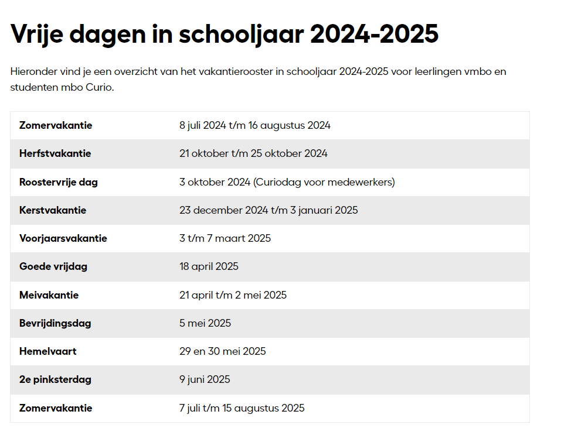

Huiswerk
Huiswerk ligt volledig aan de student zelf, Vaak kan je alles al af maken in de lessen maar als je iets niet af krijgt kan je dit altijd nog in de volgende lessen afmaken. Elke week krijg je een weekcheck die je uiteindelijk op zondag in moet leveren, Anders staat deze op telaat ingeleverd en krijg je hiervan te horen van je docent. Thuis kan je natuurlijk ook voor jezelf programmeren, maar dat ligt volledig aan de student zelf.